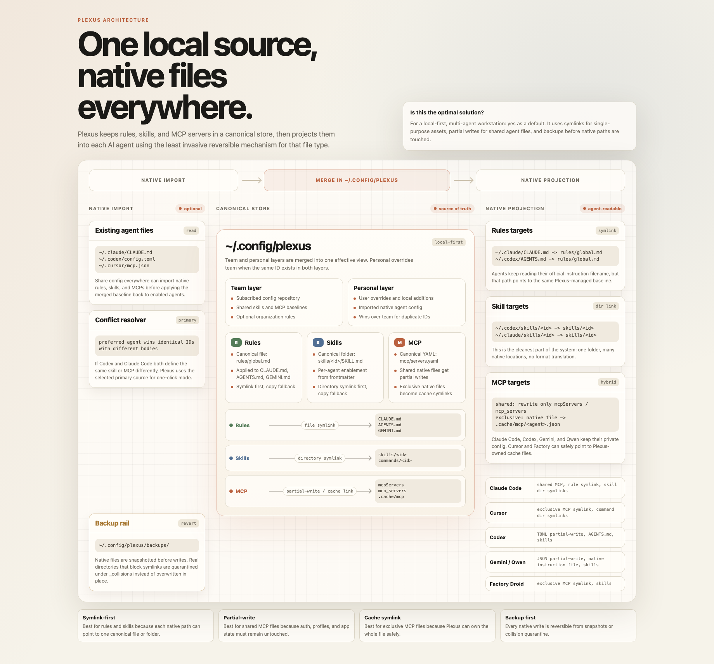

Claude Code, Cursor, and Codex can all use the same MCP servers, but they do not store
those server definitions in the same place. Claude Code uses a shared native config file.
Cursor keeps a dedicated mcp.json. Codex keeps MCP inside
config.toml. Once one tool gets the better MCP setup, manual copy-paste
becomes the fragile part of the workflow.
Why manual MCP sharing breaks down
- You add one server in Cursor and forget Claude Code or Codex.
- You want the same MCP toolset, but each agent expects a different file shape.
- Some native files also contain auth, history, or other tool-owned settings.
- Replacing a whole file just to keep MCP aligned can remove unrelated local state.
The risky part is how you write the server list back. A safe setup keeps one canonical MCP source of truth, then projects it into each tool's native config without clobbering the rest of that file.
What a safer MCP sharing model looks like
- One canonical MCP server list in a local store.
- Import from the agent configs you already have on disk.
- Partial writes for shared native files such as Claude Code and Codex.
- Generated or linked dedicated files for tools like Cursor.
- Backups before any native write.
That is the model Plexus uses. It imports MCP definitions from the tools already on your
machine, keeps the shared copy under ~/.config/plexus/, then writes back to
each agent in its own expected format. Shared configs get partial writes. Exclusive MCP
files can be rendered into a dedicated file and linked back into the agent path.

What to avoid
- Copying one tool's entire config file over another tool's native file.
- Keeping three separate MCP lists and hoping they stay aligned by memory.
- Editing shared files without a backup or preview step.
Quick start
npx -y plexus-agent-config@latest startOpen the local dashboard, let Plexus detect Claude Code, Cursor, and Codex, choose the primary source when multiple MCP lists disagree, preview the result, then sync the canonical server list back into the native files.